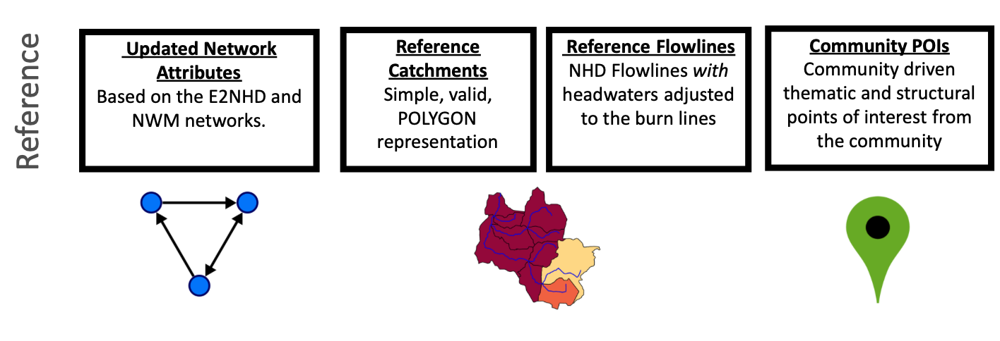
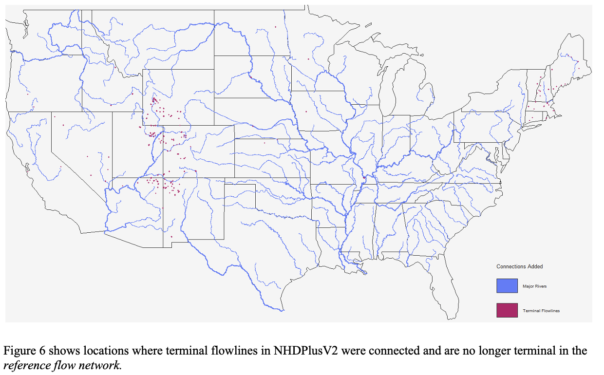
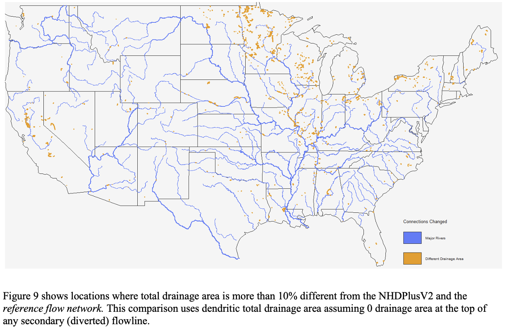
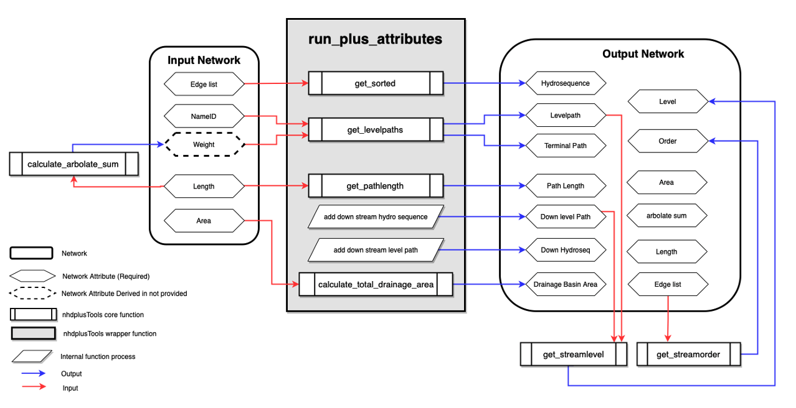

NOAA's Enterprise Hydrofabric System
Mike Johnson
Lynker, NOAA-AffiliateDavid Blodgett
USGS WMAAndy Bock
USGS WMASource:
vignettes/02-design.Rmd
02-design.RmdHow do we arrive at the NextGen Hydrofabric?
The NextGen model engine is intended to be model agnostic.
The hydrofabric is meant to be Model Application Agnostic.
-
This means that the hydrofabric should be able to support the modeling needs of applications like:
- NOAA NextGen (in its infinite flavors);
- the USGS NHM;
- the USGS SPPARROW model;
- and eventually NOAA FIM.
The USGS-NOAA Reference Fabric
For a single system to serve many - often distinct - modeling applications, there needs to be a set reference system. (analogous to a coordinate reference system (CRS))
-
This reference system must provide the maximum (e.g. smallest discretization) set of features “allowable” for all interrelated model applications.
- Right now, this is the NHDPlusV2 (with modifications)
- In the future it will move to NHDHighRes and 3DHP
- In practice, reference fabrics can be built from other hydrographies (e.g. NGA TDX and MERIT)
A refernence fabric is key to providing persistent identification (PID) for durable data integration and model interoprobility
The development of this product has been collaborative venture between the USGS Water Mission Area, the NOAA Office of Water Prediction, and Lynker.

More on this has been documented here
The 3 pillars of a Reference Fabric
https://www.sciencebase.gov/catalog/item/60be0e53d34e86b93891012b

1. Reference Features
Simple, valid, representations of all
flowpathanddividefeaturesMust be derived from a source hydrographic dataset (e.g. NHDPLus, or)
-
Currently, these are built out from the NHDPlusV2 features
- Waterbodies are simplified, islands are dissolved, and they are unioned on GNIS_ID.
- Flowlines are ensured to be digitized from upsteam to downstream
- Catchments are simplifed, and DEM fragments are dissolved into the proper adjoing catchments.
These data products can be found here
2. Reference Topology
- Since its first release, the NHDPlus topology and value added attributes have been stable
- Local groups and agencies have made modifications to this but these have never made it back into the primary source
- Improvements made by the USGS, OWP, NCAR have been integrated to provide an updated network connectivity.
- These data products can be found here



- “Generating a reference flow network with improved connectivity to support durable data integration and reproducibility in the coterminous US” {In press}

3. Reference POIs
- Collected from a variety of of published data sources
## Driver: GPKG
## Available layers:
## layer_name geometry_type features fields crs_name
## 1 refactored_flowpaths Line String 41117 7 NAD83 / Conus Albers
## 2 refactored_divides Multi Polygon 41115 4 NAD83 / Conus Albers
## 3 split_divides Multi Polygon 569 2 NAD83 / Conus Albers
## 4 mapped_POIs Point 3496 22 NAD83 / Conus Albers
## 5 lookup_table NA 65370 4 <NA>
## 6 catchment_network NA 41117 5 <NA>- POIs become
hydrolocationsat the outflow of the linkedflowpath.
What is a VPU?
A VPU is a Vector Processing Unit. The USGS determined these regions when designing the NHDPlusV2. Since our work builds off the NHDPlusV2, we adopt these processing units.
ggplot(data = vpu_boundaries[1:21,]) +
geom_sf(data = vpu_boundaries[1:21,]) +
geom_sf_label(aes(label = VPUID)) +
theme_void()## Warning in st_point_on_surface.sfc(sf::st_zm(x)): st_point_on_surface may not
## give correct results for longitude/latitude data
Getting the reference fabric
All reference products live on ScienceBase. They can be accessed with
the web interface or can be downloaded programatically. The
hydrofab::get_hydrofabric() utility will download the most
current geofabric for a Vector Processing Unit (VPU). If the requested
file already exists, the file path will be returned.
As an example, lets use the Geonconnex reference featrues to identify the location of our Fort Collins, CO gage.
This locations can be joined to the set of VPU boundaries severed
with nhdplusTools to find the correct VPU.
gage = read_sf('https://reference.geoconnex.us/collections/gages/items?provider_id=06752260')
gage = st_join(gage, st_transform(vpu_boundaries, st_crs(gage)))
(gage$VPUID)## [1] "10L"Here we can download the reference fabric for VPU=10L in the assigned base directory, and explore the layers contained within:
base <- "tmp-data"
dir.create(base)## Warning in dir.create(base): 'tmp-data' already exists
reference_gpkg = get_hydrofabric(VPU = "01",
type = "refactor",
dir = base,
overwrite = TRUE)##
|
| | 0%
|
| | 1%
|
|= | 1%
|
|= | 2%
|
|== | 2%
|
|== | 3%
|
|== | 4%
|
|=== | 4%
|
|=== | 5%
|
|==== | 5%
|
|==== | 6%
|
|===== | 6%
|
|===== | 7%
|
|===== | 8%
|
|====== | 8%
|
|====== | 9%
|
|======= | 9%
|
|======= | 10%
|
|======= | 11%
|
|======== | 11%
|
|======== | 12%
|
|========= | 12%
|
|========= | 13%
|
|========= | 14%
|
|========== | 14%
|
|========== | 15%
|
|=========== | 15%
|
|=========== | 16%
|
|============ | 16%
|
|============ | 17%
|
|============ | 18%
|
|============= | 18%
|
|============= | 19%
|
|============== | 19%
|
|============== | 20%
|
|============== | 21%
|
|=============== | 21%
|
|=============== | 22%
|
|================ | 22%
|
|================ | 23%
|
|================ | 24%
|
|================= | 24%
|
|================= | 25%
|
|================== | 25%
|
|================== | 26%
|
|=================== | 26%
|
|=================== | 27%
|
|=================== | 28%
|
|==================== | 28%
|
|==================== | 29%
|
|===================== | 29%
|
|===================== | 30%
|
|===================== | 31%
|
|====================== | 31%
|
|====================== | 32%
|
|======================= | 32%
|
|======================= | 33%
|
|======================= | 34%
|
|======================== | 34%
|
|======================== | 35%
|
|========================= | 35%
|
|========================= | 36%
|
|========================== | 36%
|
|========================== | 37%
|
|========================== | 38%
|
|=========================== | 38%
|
|=========================== | 39%
|
|============================ | 39%
|
|============================ | 40%
|
|============================ | 41%
|
|============================= | 41%
|
|============================= | 42%
|
|============================== | 42%
|
|============================== | 43%
|
|============================== | 44%
|
|=============================== | 44%
|
|=============================== | 45%
|
|================================ | 45%
|
|================================ | 46%
|
|================================= | 46%
|
|================================= | 47%
|
|================================= | 48%
|
|================================== | 48%
|
|================================== | 49%
|
|=================================== | 49%
|
|=================================== | 50%
|
|=================================== | 51%
|
|==================================== | 51%
|
|==================================== | 52%
|
|===================================== | 52%
|
|===================================== | 53%
|
|===================================== | 54%
|
|====================================== | 54%
|
|====================================== | 55%
|
|======================================= | 55%
|
|======================================= | 56%
|
|======================================== | 56%
|
|======================================== | 57%
|
|======================================== | 58%
|
|========================================= | 58%
|
|========================================= | 59%
|
|========================================== | 59%
|
|========================================== | 60%
|
|========================================== | 61%
|
|=========================================== | 61%
|
|=========================================== | 62%
|
|============================================ | 62%
|
|============================================ | 63%
|
|============================================ | 64%
|
|============================================= | 64%
|
|============================================= | 65%
|
|============================================== | 65%
|
|============================================== | 66%
|
|=============================================== | 66%
|
|=============================================== | 67%
|
|=============================================== | 68%
|
|================================================ | 68%
|
|================================================ | 69%
|
|================================================= | 69%
|
|================================================= | 70%
|
|================================================= | 71%
|
|================================================== | 71%
|
|================================================== | 72%
|
|=================================================== | 72%
|
|=================================================== | 73%
|
|=================================================== | 74%
|
|==================================================== | 74%
|
|==================================================== | 75%
|
|===================================================== | 75%
|
|===================================================== | 76%
|
|====================================================== | 76%
|
|====================================================== | 77%
|
|====================================================== | 78%
|
|======================================================= | 78%
|
|======================================================= | 79%
|
|======================================================== | 79%
|
|======================================================== | 80%
|
|======================================================== | 81%
|
|========================================================= | 81%
|
|========================================================= | 82%
|
|========================================================== | 82%
|
|========================================================== | 83%
|
|========================================================== | 84%
|
|=========================================================== | 84%
|
|=========================================================== | 85%
|
|============================================================ | 85%
|
|============================================================ | 86%
|
|============================================================= | 86%
|
|============================================================= | 87%
|
|============================================================= | 88%
|
|============================================================== | 88%
|
|============================================================== | 89%
|
|=============================================================== | 89%
|
|=============================================================== | 90%
|
|=============================================================== | 91%
|
|================================================================ | 91%
|
|================================================================ | 92%
|
|================================================================= | 92%
|
|================================================================= | 93%
|
|================================================================= | 94%
|
|================================================================== | 94%
|
|================================================================== | 95%
|
|=================================================================== | 95%
|
|=================================================================== | 96%
|
|==================================================================== | 96%
|
|==================================================================== | 97%
|
|==================================================================== | 98%
|
|===================================================================== | 98%
|
|===================================================================== | 99%
|
|======================================================================| 99%
|
|======================================================================| 100%Working with the Geopackages
The geopackage is a critical file format for sharing this type of data because it is (1) self containing (2) compact and (3) language agnostic. There are two broad paths to accessing the data. The first is a GDAL based approach (in R this is using sf, but in python Fiona or geopandas works well).
# Read Options
pacman::p_load(sf, DBI, RSQLite, dplyr)
### 1. GDAL/geopackage
st_layers(reference_gpkg)## Driver: GPKG
## Available layers:
## layer_name geometry_type features fields crs_name
## 1 refactored_flowpaths Line String 41117 7 NAD83 / Conus Albers
## 2 refactored_divides Multi Polygon 41115 4 NAD83 / Conus Albers
## 3 split_divides Multi Polygon 569 2 NAD83 / Conus Albers
## 4 mapped_POIs Point 3496 22 NAD83 / Conus Albers
## 5 lookup_table NA 65370 4 <NA>
## 6 catchment_network NA 41117 5 <NA>
nex = read_sf(reference_gpkg, "mapped_POIs")
head(nex)## Simple feature collection with 6 features and 22 fields
## Geometry type: POINT
## Dimension: XY
## Bounding box: xmin: 2009569 ymin: 2883035 xmax: 2029956 ymax: 2967498
## Projected CRS: NAD83 / Conus Albers
## # A tibble: 6 × 23
## ID toID set identifier COMID Type_HUC12 Type_Gages Type_TE Type_NID
## <dbl> <dbl> <chr> <int> <chr> <chr> <chr> <chr> <chr>
## 1 10000000 1.00e7 1004… 1 7170… 010100020… NA NA NA
## 2 10000011 1.00e7 1000… 2 7179… 010100020… NA NA NA
## 3 10000043 1.00e7 1000… 3 7189… 010100020… NA NA NA
## 4 10000053 1.00e7 1000… 4 7184… 010100020… NA NA NA
## 5 10000070 1.00e7 1000… 5 7200… 010100020… NA NA NA
## 6 10000079 1.00e7 1000… 6 7200… 010100020… NA NA NA
## # ℹ 14 more variables: Type_WBIn <chr>, Type_WBOut <chr>, Type_Conf <chr>,
## # Type_Term <chr>, Type_Elev <chr>, Type_Travel <chr>, nexus <chr>,
## # snapped <lgl>, TotDASqKM <dbl>, DnHydroseq <int>, type <chr>,
## # member_COMID <chr>, Type_Con <dbl>, geom <POINT [m]>The second is as a SQLite database (in R, I am doing this with RSQLite/DBI/dplyr):
### 2. SQLite/Database
db <- dbConnect(SQLite(), reference_gpkg)
dbListTables(db)## [1] "catchment_network"
## [2] "gpkg_contents"
## [3] "gpkg_extensions"
## [4] "gpkg_geometry_columns"
## [5] "gpkg_ogr_contents"
## [6] "gpkg_spatial_ref_sys"
## [7] "gpkg_tile_matrix"
## [8] "gpkg_tile_matrix_set"
## [9] "lookup_table"
## [10] "mapped_POIs"
## [11] "refactored_divides"
## [12] "refactored_flowpaths"
## [13] "rtree_mapped_POIs_geom"
## [14] "rtree_mapped_POIs_geom_node"
## [15] "rtree_mapped_POIs_geom_parent"
## [16] "rtree_mapped_POIs_geom_rowid"
## [17] "rtree_refactored_divides_geom"
## [18] "rtree_refactored_divides_geom_node"
## [19] "rtree_refactored_divides_geom_parent"
## [20] "rtree_refactored_divides_geom_rowid"
## [21] "rtree_refactored_flowpaths_geom"
## [22] "rtree_refactored_flowpaths_geom_node"
## [23] "rtree_refactored_flowpaths_geom_parent"
## [24] "rtree_refactored_flowpaths_geom_rowid"
## [25] "rtree_split_divides_geom"
## [26] "rtree_split_divides_geom_node"
## [27] "rtree_split_divides_geom_parent"
## [28] "rtree_split_divides_geom_rowid"
## [29] "split_divides"
## [30] "sqlite_sequence"
fpa = collect(tbl(db, "mapped_POIs"))
head(fpa)## # A tibble: 6 × 24
## fid geom ID toID set identifier COMID Type_HUC12 Type_Gages
## <int> <blob> <dbl> <dbl> <chr> <int> <chr> <chr> <chr>
## 1 1 <raw 29 B> 10000000 1.00e7 1004… 1 7170… 010100020… NA
## 2 2 <raw 29 B> 10000011 1.00e7 1000… 2 7179… 010100020… NA
## 3 3 <raw 29 B> 10000043 1.00e7 1000… 3 7189… 010100020… NA
## 4 4 <raw 29 B> 10000053 1.00e7 1000… 4 7184… 010100020… NA
## 5 5 <raw 29 B> 10000070 1.00e7 1000… 5 7200… 010100020… NA
## 6 6 <raw 29 B> 10000079 1.00e7 1000… 6 7200… 010100020… NA
## # ℹ 15 more variables: Type_TE <chr>, Type_NID <chr>, Type_WBIn <chr>,
## # Type_WBOut <chr>, Type_Conf <chr>, Type_Term <chr>, Type_Elev <chr>,
## # Type_Travel <chr>, nexus <chr>, snapped <int>, TotDASqKM <dbl>,
## # DnHydroseq <int>, type <chr>, member_COMID <chr>, Type_Con <dbl>
dbDisconnect(db)